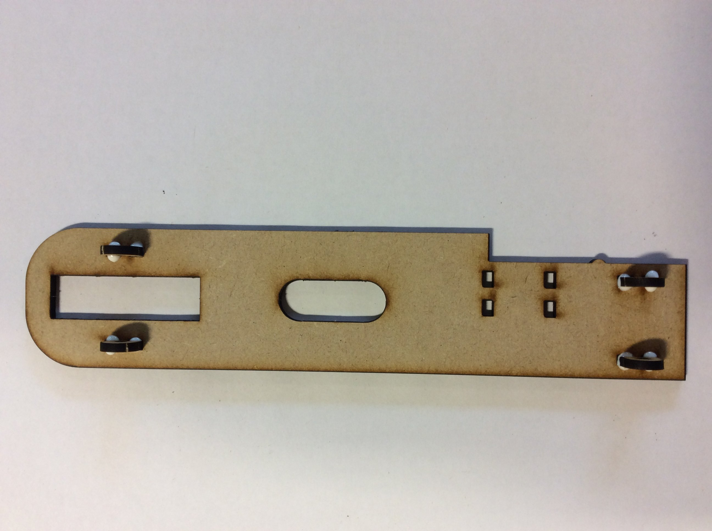

Building the Drag Car
Table of Contents
1 Introduction
- To be build a successful Drag racer, you will need to read and follow the instructions carefully.
Wheels
- building the wheels.
- First cut 2 lengths of 3mm threaded bar. Make sure you put a nut on each end before cutting, this will help you fix the thread at the ends you cut by removing the nut.
- Take the 2 pieces of 3mm threaded bar and the 8 sets of wheels (4 front and 4 back).
- Put a nut on each side of the threaded bar, this will hold the first wheel in place.
- You now need to place a small amount of PVA glue on each wheel and then use the nuts to tighten them in place while the glue dries.
- The front wheel does not need gluing together. There is a video on building the front axle below.
Body
- Now you will need to glue the axle mounts in place, follow the pictures below.

Rear Axle and Pulley
- You will now need to remove one of the rear wheels you glued earlier.
- Then slide the axle through the axle mounts.
- Now you can place the pulley on the opposite side. Be sure to place a nut either side of the pulley, this will tighten up against the pulley and hold it on the axle.
- Now place the final rear wheel back on and secure the final nut.
Front Axle Mounts
- The front axle follows a different process.
- First, remove the 2 nuts previously put on the axles.
- Now feed the axle through one side and place a nut on the one end.
- Now slide the wheel between the axle and the hole provided. and place a nut on the other side.
- Now tighten the nut onto either side of the wheel, ensuring it is in the centre.
- Now add a 'nylock' nut to either side of the axle mounts.
- Your completed chassis should now look like this.
Motor mount
- Now put the motor together and mount it to the chassis.
- First, you will need to solder the battery holder to the motor.
- Now fit the front pulley by pushing them onto the motor. Place the back of the motor on the table to prevent the rotor pushing through the housing.
- Make sure the pulley do not touch the motor, or it will not turn.
- You can now cable tie the motor in place.
- You can now glue the battery box in place.
Final Drive and Body
- Mount the elastic band and you should have a complete chassis with electrics.
- And fit the aerodynamic cover to test the fit.
- You will now take home the Drag racer body and decorate as you wish.